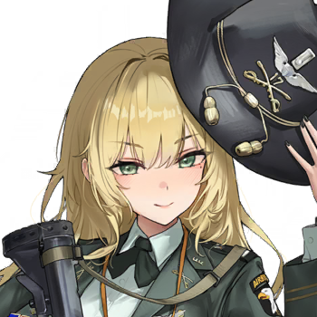
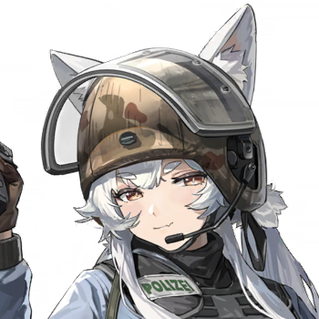
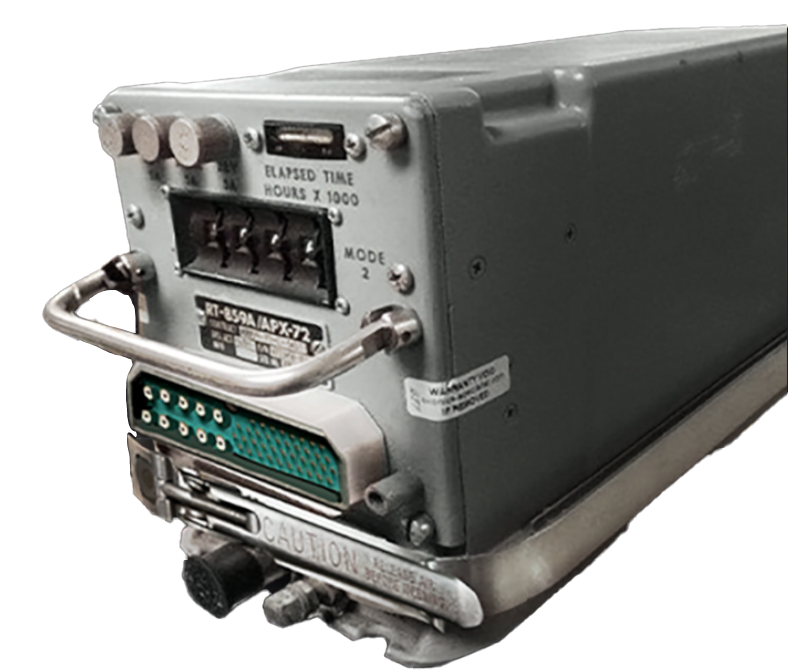
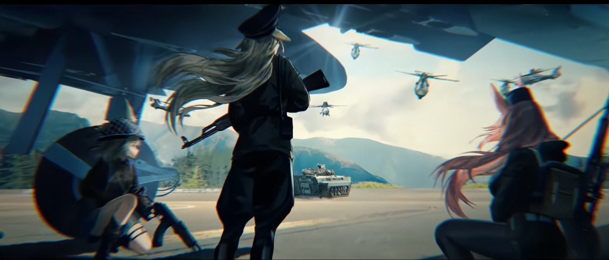

Back to main page :
[Main page]
[Story List]
[Next Chapter]
3-2 Inspection and Acceptance
Characters
Warrant Officer
Julius
Felice
Erika
Hannah
Sylvia

Jacqueline

Tatyana
Summary
The 501's raid exposed the secret weapon being tested, an unmanned armed helicopter. The 501's targeted electronic countermeasures rendered the helicopter unable to fire, infuriating Captain Jacqueline at the experimental base.
[The 501st is now standing in front of the A10]
Felice (Alloy)
Aha--finally, we finally forced these secret weapons out.
Warrant Officer
You looks excited.
[The experimental Helicopters can be seen flying over the tree line]
Felice (Alloy)
I’ve been trying to catch it for a long time through all kinds of technical files—---but this is the first time to see it right in the face, and a live one. Ain’t these quite a beauty?
Erika
But, these helicopters are sent to attack us!
Felice (Alloy)
Since they install some backdoors on these A-10, we will be safe if we hide around the A-10
Hannah
Won’t those drone identification systems find our vehicle?
Felice (Alloy)
That vehicle is a lost cause,we just need to be aware that it’s ammo might cook off.
Erika
Ah ? ! That can’t be ? Our vehicle is a model of equipment maintenance within the army group!
Felice (Alloy)
It’s still just a vehicle anyway, just another unimportant consumables during wartime.
Sylvia
But if the vehicle is blown, we can’t communicate with HQ !
Felice (Alloy)
We still have A-10 onboard radio, the communication quality might even be better.
Sylvia
But, without this vehicle, we couldn't have gone deep into enemy territory to help our scout comrade and it wouldn’t have been possible to find the enemy experimental facility location !
Hannah
Comrade captain, I request the usage of Electronic countermeasures to preserve our combat vehicle
Julius
State your plan.
Hannah
I inspect the “Response Pod” on their A-10. The signal its firing is quite simple.
Hannah
I can operate the vehicle-mounted radar on my own to perform adaptive matching of the response signal, enabling our combat vehicle to transmit the same signal.

Julius
How certain are you?
Hannah
Around 90%
Julius
Plan approve, immediate operation
Sylvia
I will go with Hannah, it will be faster with the two of us.
Erika
Then I will go too ! If the vehicle could move, it would be more safe !
Julius
Not everyone have to go risk it-- Sylvia go together, others stay close to the A-10, find cover

When the noses of the drones were pointed at them, everyone was holding their breath. No one could be so sure that the transponder (IFF ?) Was still working……
Felice (Alloy)
Look, they can only get into position but can’t fire their ammunition.
Erika
Hey, you're not scaring us, you iron brick !
Julius
That means, the transponder still word, then Hannah strategy should be successful.
Felice (Alloy)
Looks like Comrade Captain is confident of her warriors.
Julius
Of course, if not, the 501st comrade has to walk herself back to the back line isn’t it?
Felice (Alloy)
Thanks—---if only the chief at the A Burneau cared about me as much as you do. It’s not easy for me wanting to end my undercover operation and go back to the backline.
Erika
Oh no, they are moving towards Hannah and Sylvia.
Warrant Officer
Hope that they already crack the transponder’s signal.
Erika
Bu, but—---- I just think about it, even if we trick the helicopters automatic system, what if the enemy pilot manual controls it and fires at us !
Felice (Alloy)
Such possibilities can be removed.
Erika
Em, Right ! Because this kind of helicopter is designed for lazy people, enemy pilots aren't that aren’t hardworking !
Felice (Alloy)
It’s because this kind of helicopter has no pilot.
Hannah
Reporting to Comrade Captain, We successfully activate the ECM !
Julius
Much appreciation, thank you for securing the vehicles essential for mobile operations. We have obtained the components needed to repair the radio; let's move out immediately!
[Inside a commande post surounded but Data trucks, the command post itself is filled with complex comunication devices and computers]
Jacqueline
Why can’t our advance unmanned attack helicopter system deal with some stragglers.
Tatyana
Er, the technical personnel say there are some problems, our drone refuses to open fire.
Tatyana
Might because the enemy use some jammers or the enemy simulate the IFF Responds, or maybe the optical recognition of the A-10 as friendlies……
Tatyana
They say it’s not something significant, it should be fast to resolve, just the enemy bombing destroys the communication device and makes things complicated.
Tatyana
Right now it’s hard to su…….
Jacqueline
Maybe, just maybe you believe in their bluff.
Tatyana
But, aren't they brilliant scientists? They stated that these are minor issues that can be resolved, and that this incident won't affect combat effectiveness.
Tatyana
If we finish the testing and acceptance, these drones could be put into combat, the war would end soon……
Jacqueline
Tatyana, do they really care about when the war is gonna end?
Jacqueline
They only wish for me to quickly sign the acceptance report in order to get the bonus and break permission, leave this place that is close to the frontline and might get bombed sometimes.
Tatyana
Oh! Now I get it, I also wish to be transferred to the backlines or these days of working are all for nothing.
Tatyana
But I also don’t want these unreliable weapons to be used on the battlefield.
Jacqueline
Are those experts fine?
Tatyana
When they started shooting, I moved move the expert into underground cover as soon as possible, I guess they are still safe.
Jacqueline
Tell them to come out to do work. We need data, find out the reason why they are not attacking the enemy and transfer those drones away.
Tatyana
Those experts say, after the helicopters lose command for some time they will drop down automatically, then, then……. what’s the word again?
Jacqueline
Then they will force formatting,and be able to manually assume control and retrieve data?
Tatyana
Yea, that’s what he say.
Tatyana
But now they refuse to come out from the underground cover, saying the external situation is unclear, so I must quickly organize a force to wipe out the enemy's infiltrating troops.
Jacqueline
If only these factory personnel had half the responsibility as you.
Jacqueline
But they don’t even think about the most basic technical problems, It ends up in a complete mess everytime.
Tatyana
The experts say granting the authority to make autonomous decisions is all it takes to resolve this minor issue; the refusal to attack the enemy will soon cease to occur
Jacqueline
Eh, that’s what I worry about, they will attack civilians and our troops.
Tatyana
No need to worry, The experts say, that after they retake control, Machine decision-making can be paused at any time.
Jacqueline
Don’t you think the statement is conflicted? saying total human control then say it could fight independently. Then why can’t they control them to fire just now?
Tatyana
Yea, why?
Jacqueline
That’s why Tatyana, you couldn’t be a sales woman, believing what “experts” say and say it to others.
Tatyana
So, those scientists just want those drones to pass the acceptance phase just for some breaks and bonus…….
Tatyana
But the brigadier wont get breaks and bonus,He seems to be quite nervous.
Jacqueline
He will get it, it’s a system issue
Tatyana
Didn’t know Vespuccia's military had such a system.I don’t really understand.
Jacqueline
It’s not the military system……. but the unspoken rules of our political structure.
Jacqueline
He solve some problems for those military industrial complex and they will thank him, give him money, help him to be promoted and take shiny medals
Tatyana
Eh? If that’s the case, isn’t the Brigardier serving the military industrial complex !
Jacqueline
What is strange about it? What do you think about why this war started ?
Tatyana
I never think about it……………
Jacqueline
It’s for the interest of the military industrial complex. They deplete existing stockpiles of munitions and develop new types of equipment, funneling vast sums of money to arms manufacturers and allowing them to line their pockets lavishly.
Tatyana
Is that true?
Jacqueline
The logic of war has changed, it’s not about justice and honour, the battlefield is no longer for soldiers filled with honour.
Jacqueline
Mega cooperation have turned everyone into a gear for a money printing machine.
Jacqueline
But humans were never “Parts”, they still possessed some conscience and a sense of shame; inevitably, he is bound to do things that accord with his true nature.
Jacqueline
That’s why cooperation needs fully controlled machines to replace humans with conscience.
Jacqueline
That’s why we face horrible things everyday. Politicians who started the war are already dirty enough, yet there’s still businessmen who started the war for profit.
Tatyana
But………..I’m not some soldier filled with honour. If the future of warfare is to fight with machines, I can do something casual………..
Tatyana
I still like answering the phone, serving as a waitress or some other kind.
Jacqueline
Right, you essentially still a civilian …………. even if those Phalanstry guys fought their way in, your life would still remain the same.
[Story List]
[Next Chapter]
{kind=link}
{kind=link}